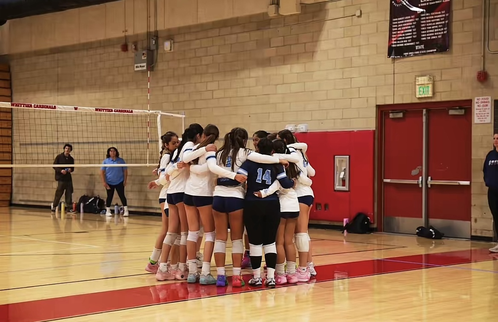

Learn more about who I am, my interests, and my journey throughout computer science.

My name is Alison and some of my interests and hobbies include playing volleyball, listening to music, going to the beach, watching sunsets, going for runs, sleeping, spending time with friends, and watching movies. Outside of school, I enjoy being around people I care about and doing things that help me relax, have fun, and make good memories.
I also included a picture of me with my volleyball team because volleyball is a big part of my life and something I really enjoy. I have played the sport for a little over 6 years now.
The purpose of this portfolio is to showcase the projects, skills, and knowledge I developed throughout this computer science class. This website highlights my progress, creativity, and the effort I put into learning different coding concepts and problem-solving strategies over the course of the year.
As time went on in this class, my coding and problem-solving skills improved a lot. At the beginning, I honestly thought this class was going to be boring and feel really long, but I actually ended up enjoying it much more than I expected. I had fun creating projects and learning how coding works.
Throughout the class, I learned how to think more logically, debug mistakes, and work through challenges without giving up immediately. This learning experience helped me b ecome much more confident in my ability to code and understand computer science concepts.
Overall, this class taught me that coding can be both challenging and rewarding, and it gave me a greater appreciation for technology and programming.